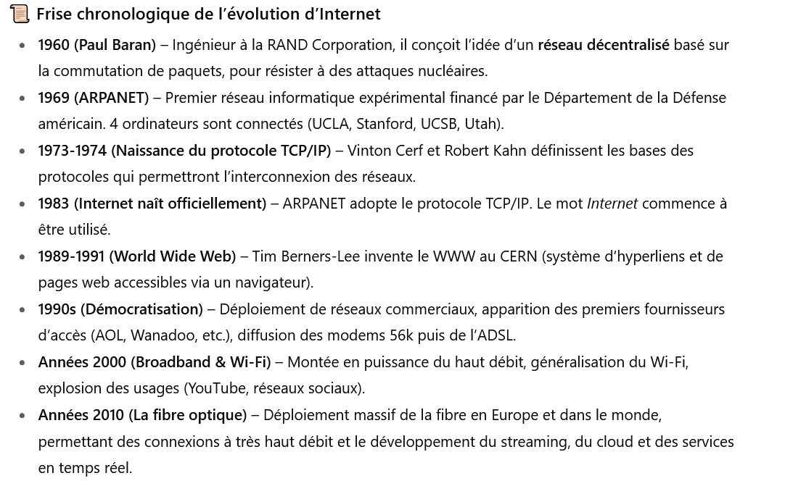
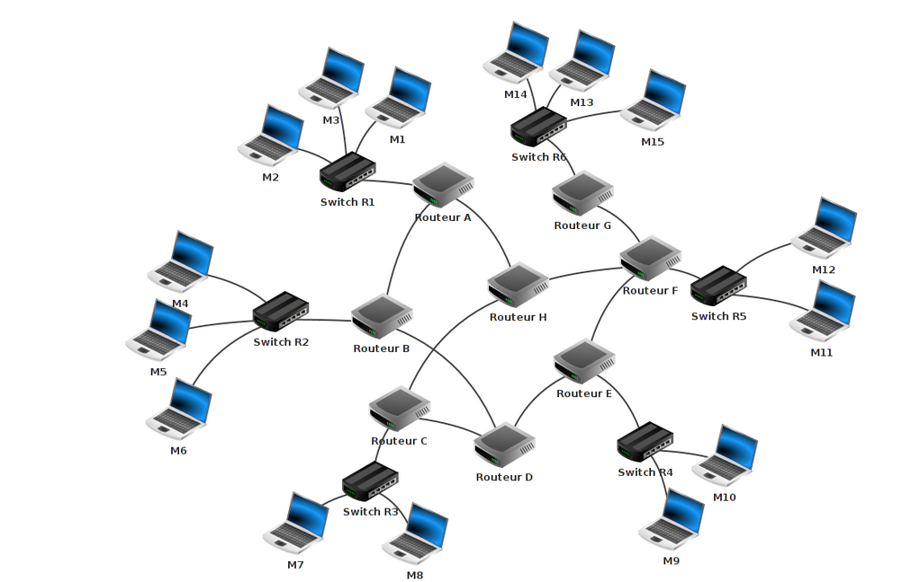
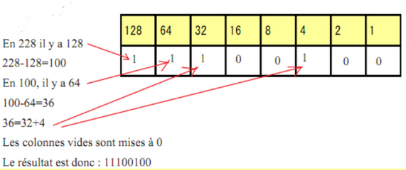

INTERNET
Introduction
INTRO
Internet, on entend ce mot quarante fois par jour. Mais, qu'est ce donc ? Et surtout comment ça marche ?
Une video d'introduction
Un texte d'introduction
Que se passe-t-il lorsque vous tapez dans la barre d'adresse de votre navigateur «http://www.google.fr» ? Votre ordinateur va chercher à entrer en communication avec un autre ordinateur se trouvant probablement à des milliers de kilomètres de chez vous. Pour pouvoir établir cette communication, il faut bien sûr que les 2 ordinateurs soient « reliés ». On dira que nos 2 ordinateurs sont en réseau. Il existe énormément de réseaux (la plupart des ordinateurs du lycée sont en « réseau »), certains réseaux sont reliés à d'autres réseaux qui sont eux-mêmes reliés à d'autres réseaux... ce qui forme « des réseaux de réseaux de réseaux...». Savez-vous comment on appelle cet assemblage multiple de réseaux ? Internet !
L'idée de relier des réseaux d'ordinateurs à d'autres réseaux d'ordinateurs date du début des années 70 avec le projet ARPAnet qui est, avec juste raison, considéré comme l'ancêtre d'internet.
Afin de pouvoir s'identifier, tout ordinateur possède une adresse sur un réseau : son adresse IP.
Une adresse IP est de la forme "74.125.133.94" (cette adresse IP correspond au serveur de google "google.fr")
Les adresses IP sont de la forme : "a.b.c.d", avec a, b, c et d compris entre 0 et 255. Nous aurons l'occasion de revenir là-dessus un peu plus tard.
N.B. Une autre norme est en train d'être déployée, la norme IPV6 (alors que les adresses IP vues ci-dessus appartiennent à la norme IPV4). Pourquoi cette nouvelle norme ? Parce qu' avec le système IPV4, il risque, dans les prochaines années, de manquer d'adresses IP disponibles sur internet.
Remplir la fiche N1
L'historique
Quelques dates importantes

Travail à Faire :
1. Réaliser une frise
2. Trouver aujourd'hui le pourcentage de la population qui est connecté à internet
et le pourcentage d'utilisation de la fibre.
En France , dans le monde et dans un pays de votre choix
Le routage
Définitions
- Octet :C'est l'unité de base utilisée en informatique pour quantifier les grandeurs . Chaque octet est composé de 8 symboles, appelés bits et prenant la valeur 0 ou 1.
- Paquet : C'est un ensemble de données qui transite sur le réseau. Un paquet a une taille très limitée(1500 octets maximum)
- Routage : C'est le mécanisme de transport d'un paquet de données d'une source à un destinataire .
- Routeur : C'est l'équipement informatique qui assure l'acheminement des données de l'émetteur au destinaitaire .
 un réseau informatique
Le fonctionnement du routage
Un ensemble de données doit être transmis depuis une machine A vers un machine B. La machine A est connectée à un réseau et la porte d'entrée de cette machine sur le réseau est souvent, au moins dans les habitations , une box. Cette box est un routeur et est en liaison avec ses routeurs voisins. Chacun possède une table de routage qui lui permet d'envoyer le paquet au bon endroit.
Remarque : Lorsqu'une route est coupée, les routeurs ont toujours une solution pour acheminer les paquets : Ils trouvent un autre chemin. On peut faire l'analogie avec les GPS
Les protocoles de routage
Les transferts de données , les communications se font sur internet à l'aide d'une série de protocole selon un modèle appelé TCP/IP
Définition
Un protocole est un ensemble de règles/formes qui régissent une interaction ou une communication, que ce soit dans les domaines social, diplomatique, juridique ou informatique, afin d’assurer l’interopérabilité, la sécurité et le bon déroulement des échanges entre les parties ou systèmes. (définition IA de qwant )
Le modèle TCP/IP
Le modèle TCP/IP est composé de quatre couches :
- La couche application utilise des logiciels qui s'appuient sur lkes protocoles comme HTTPS ( web), SMTP ( mail)
- La couche transport utilise le protocole TCP qui est chargé d'acheminer les paquets sur le réseau . Ce protocole vérifie aussi que les données arrivent bien à leur destinaire.
- La couche interne utilise le protocole IP qui permet le cheminement des données à travers les différents routeurs à l'aide de l'adresse IP
- La couche réseau qui s'assure de la liaison physique et donc du mode d'acheminement sur les machines : Ethernet, fibre ...
Que fait le protocole TCP ?
C'est lui qui régit les écahnges de données en tre deux machines . Plus précisement
-
Il vérifie que le destinataire est prêt à recevoir les données
-
Il prépare les envoie de paquets en découpant les données à envoyer en 'paquet' de petite taille
-
Il vérifie que chaque paquet est bien arrivé . Si ce n'est pas le cas , le TCP du destinataire redemande les paquets manquants et il les assemble pour reformer le message initial
Quel est le rôle du protocole IP ?
Avant de voir le rôle du protocole IP, définissons ce que l'on appelle une adresse IP.
Definition : Adresse IP
Tout objet connecté sur internet possède une adresse IP, de type IPV4, unique . Celle ci est composée de quatre nombre entre 0 et 255 séparé par des points : Ex 192.168.21.1
Cette adresse IP est composée de deux parties :
* Une partie qui identifie le réseau, c'est la partie à gauche.
* Une partie qui identifie la machine sur le réseau , c'est la parie à droite.
* Il est toujours précisé combien de nombres identifient la partie réseau et donc machine.
Remarque : Afin de pouvoir utiliser plus d'adresse IP, il existe des adresses IPV6, permettant d' accueillir
beaucoup plus d'appreils connectés sur un réseau.
Le rôle du protocole IP est de s'assurer du bon acheminement des données à transmettre entre deux machines. Il s'appuie pour cela sur les adresses IP des machines , en s'aidant des tables de routage de chaque routeur traversés.
Et le protocole DNS dans tout ça ?
Le protocole DNS (domain name system ) est un protocole qui permet de lier une adresse IP et une URL (www.lyceerotroudreux.com est l'URL qui permet de se rendre sur le site du lycée )
Le DNS est l'annuaire d'internet: Il transforme l'url demandée en l'adresse IP correpsondante . Pour le lycée , il s'agit de 62.210.16.61.Plus simple de retenir l'url...
La video ultime
Activité autour des adresses IP
Un peu plus loin avec les adresses ip
On a vu en cours qu’une adresse IPv4 était composées de 4 octets séparés par des points Une partie de cette adresse sert à identifier le réseau, la partie de gauche et le reste sert à identifier les machines sur le réseau.
Dans le reste de ce TD les trois octets les plus à gauche servent à identifier le réseau.
Exercice 1
Le réseau est identifié par les trois premiers octets Quels sont les ordinateurs qui sont sur le réseau identifié par l’adresse ip 192.168.21.0 ?
-
192.168.21.87
-
192.168.21.258
-
192.168.0.21
-
192.168.21.255
Exercice 2
- Donner une adresse IP possible pour un réseau.
- Donner trois adresses possibles pour des machines sur ce réseau.
Conversion en binaire
Le système binaire
Le système binaire s’appuie sur deux symboles, le 0 et le 1 , mais fonctionne exactement comme le système décimal . Dès qu’un rang est plein, on augmente de 1 celui d’après et on réinitialise à 0. Voici la construction de l’écriture des premiers entiers en binaire.
| décimal | binaire |
|---|---|
| 0 | 0 |
| 1 | 1 |
| 2 | 10 |
| 3 | 11 |
| 4 | 100 |
| 5 | 101 |
| 6 | 110 |
| 7 | 111 |
| 8 | 1000 |
| 9 | 1001 |
| 10 | 1010 |
Passage du système décimal au binaire et réciproquement
Du décimal au binaire
Il existe une méthode très simple pour passer du décimal au binaire. Cette méthode est fondée sur l’algorithme d’’Euclide et les restes successifs de la division euclidienne par 2 de l’entier que l’on veut convertir. On obtient une succession de reste (0 ou 1) . Il suffit de les écrire du dernier obtenu , qui doit être 1, au premier. Exemple : Convertissons 104 en binaire
| 104 | Reste de la division par 2 |
|---|---|
| 104=2*52 | 0 |
| 52=2*26 | 0 |
| 26=2*13 | 0 |
| 13= 6*2+1 | 1 |
| 6=3*2 | 0 |
| 3=2*1+1 | 1 |
| 1=2*0+1 | 1 |
L'écriture binaire de 104 s'obtient en écrivant les restes obtenus du dernier au permier soit ici 1101000
> Un nombre pair se finira toujours par un 1 en binaire
Le binaire sur un octet
- L'unité de base en informatqiue est le bit , qui prend donc la valeur 0 ou 1
- Un octet est composé de 8 bits .
- Le plus petit nombre que l'on peut écrire sur un octet est 0 et le plus grand 255, qui correspond à 11111111
- La notation internationale pour l'octet est o. On parlera alors de ko (kilooctet), Mo (Megaoctet);Go(Gigaoctet)...
L'astuce pour écrire rapidement un nombre en binaire
L'astuce repose sur la connaissance des puissances de 2 , jusqu'à \(2^{7}\)

Il suffit donc de voir si les différentes puissances de 2 "rentre" dans le nombre que l'on veut écrire . Si c'est le cas , on soustrait la;puissance de 2 au nombre à decimal et on reccomence avec la puissance inférieure .
Exercice 3
Convertir en binaire les nombre suivants: .19 . 25 .65 .108 .217 .254